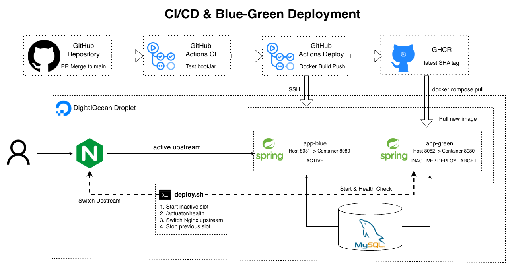

06
Infrastructure & Deployment

CI/CD Pipeline
기능 브랜치를 main에 병합하면 GitHub Actions CI가 테스트와 bootJar 빌드를 수행합니다. CI 성공 시 Deploy Workflow가 Docker 이미지를 빌드해 GHCR에 SHA 및 latest 태그로 업로드합니다.
Blue-Green Deployment
GitHub Actions는 SSH를 통해 DigitalOcean 서버의 배포 스크립트를 실행합니다. 배포 스크립트는 현재 운영 중이지 않은 슬롯에 신규 이미지를 실행합니다.
| 슬롯 | 호스트 포트 | 컨테이너 포트 |
|---|---|---|
| Blue | 8081 | 8080 |
| Green | 8082 | 8080 |
Deployment Failure Handling
신규 컨테이너의 Health Check가 실패하면 Nginx upstream을 변경하지 않습니다. 따라서 기존 컨테이너가 계속 요청을 처리하고, 실패한 신규 배포의 로그를 확인할 수 있습니다.
정상 상태가 확인된 컨테이너만 운영 트래픽을 받도록 하여 배포 중단 위험을 줄였습니다.